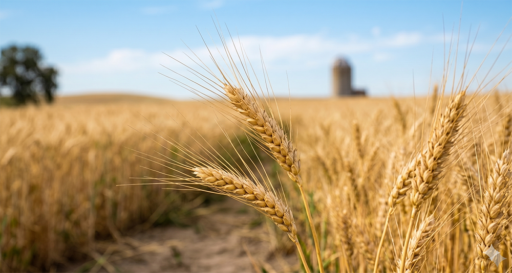
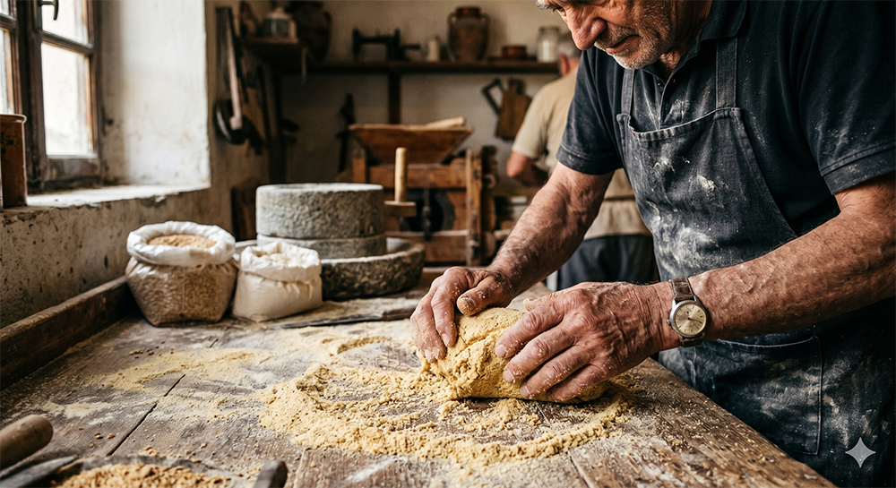
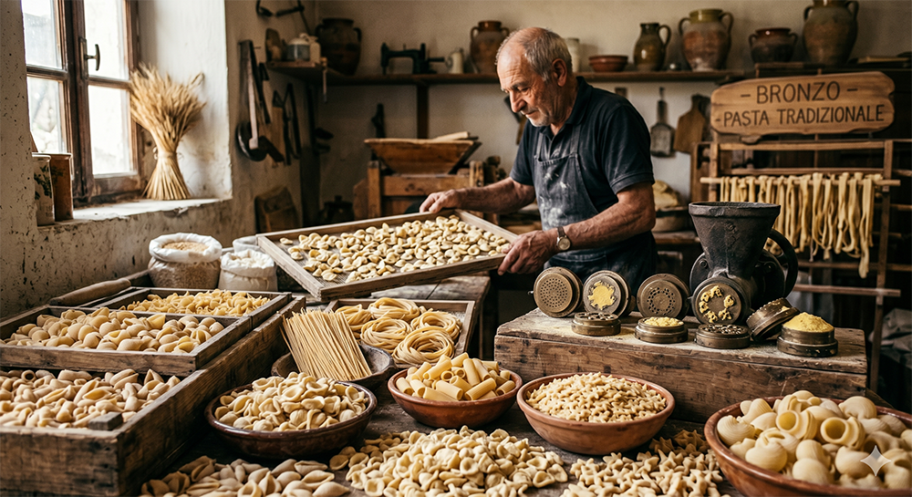
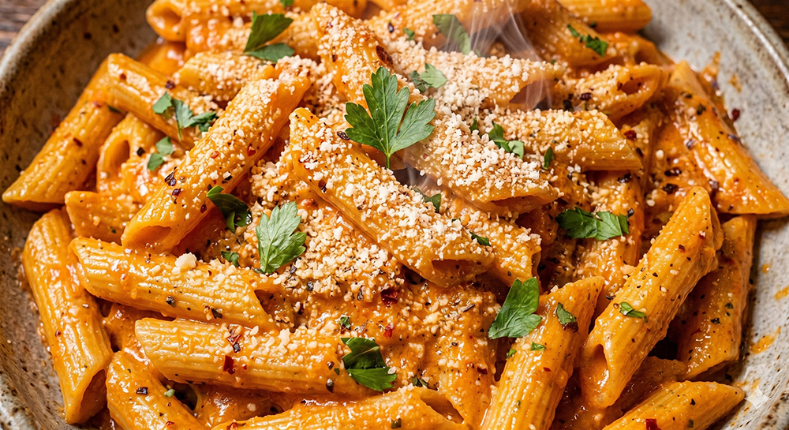
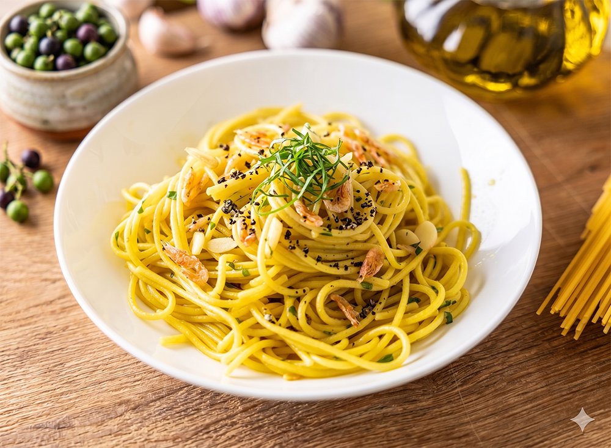

喧囂的城市裡，食物只是為了填飽肚子？
重新認識日常餐桌上的歐洲飲食文化與工藝美學。

故事始於地中海溫暖的陽光。深入探討義大利不同地域的風土與氣候，南義炎熱乾燥的氣候孕育出高蛋白質、適合乾燥保存的硬質「杜蘭小麥 (Durum Wheat)」。
而北義受阿爾卑斯山脈影響，氣候濕潤，因而發展出加入雞蛋揉製的新鮮麵團。每一粒麥子，都紀錄著當地風土的獨特指紋。

經過傳統石磨細細碾磨的粗粒小麥粉 (Semolina)，在工匠粗糙而充滿力量的手中甦醒。製麵不僅是一項技術，更是一種直覺。
職人們透過手感敏銳地判斷麵糰的濕度、溫度與彈性。在這揉壓與靜置的呼吸之間，包覆著對食材的至高尊重與數百年傳承的歷史記憶。

超過三百種的義大利麵形狀，絕非偶然，而是歐洲飲食文化中極致的「工藝設計」。傳統工廠使用黃銅模具 (Bronze Die) 擠壓麵條，賦予其表面微小而關鍵的粗糙孔隙。
從宛如貝殼的 Conchiglie 到細長的 Spaghetti，每一種形狀的誕生，都是為了解決「如何完美承載當地特色醬汁」這道千古難題。

當粗糙表面的寬扁麵遇上波隆那濃郁的肉醬，當細長直麵裹上那不勒斯清澈的蒜香橄欖油——這是食材間最神聖的融合。
跳脫純粹追求美味的表層，我們看見的是自然風土的餽贈與人類智慧的結晶，在餐桌上達成了令人屏息的和諧。

當義大利的製麵工藝落腳於台灣，職人們開始在麵粉中揉入島嶼的呼吸。這不僅是技術的轉移，更是一場關於在地生命力的轉譯工程。
從大甲芋頭的溫潤到東港櫻花蝦的鮮香，我們將「田園到餐桌」的理念植入麵體。透過對亞熱帶濕度的精準調控，研發出更具勁道的在地義大利麵，讓傳承百年的歷史記憶與台灣土地的脈搏，在餐桌上達成萬里共鳴。